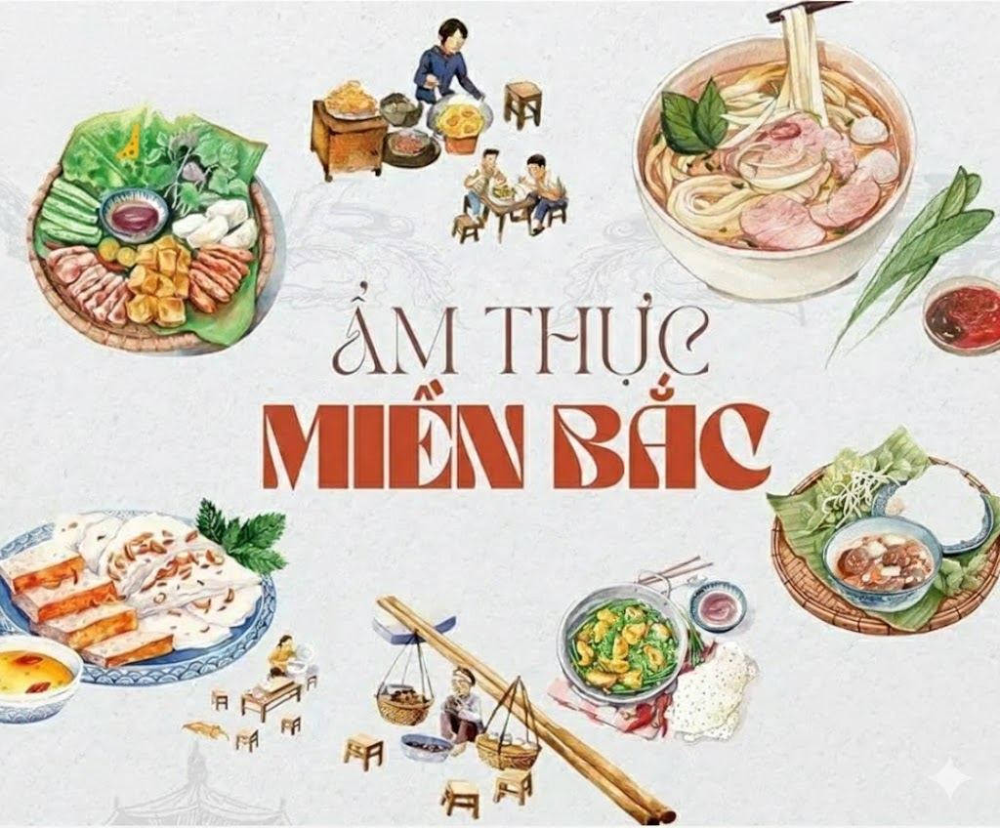
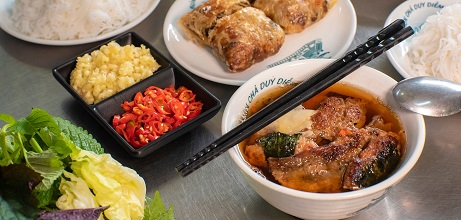
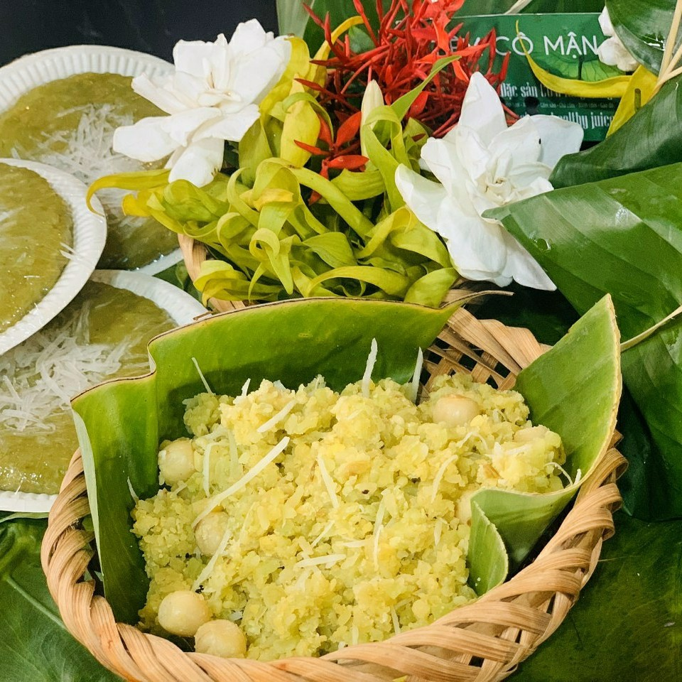
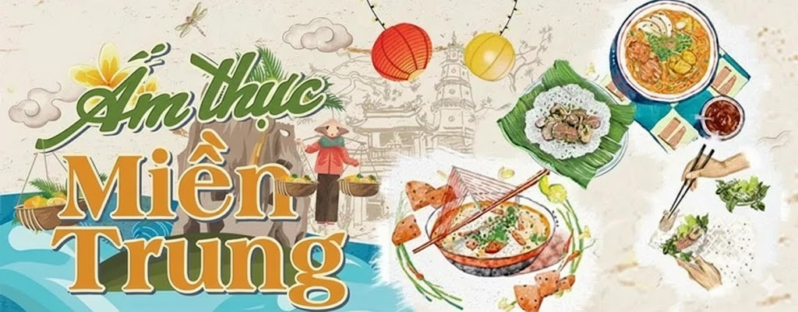
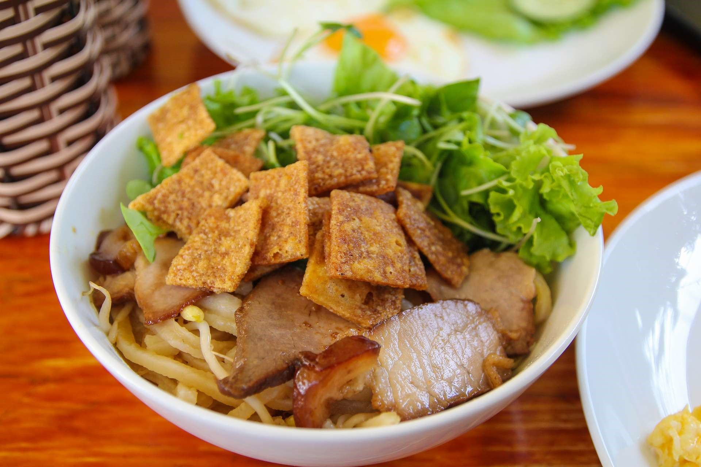
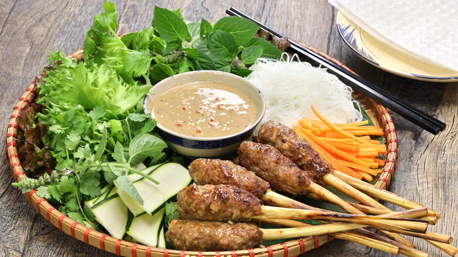
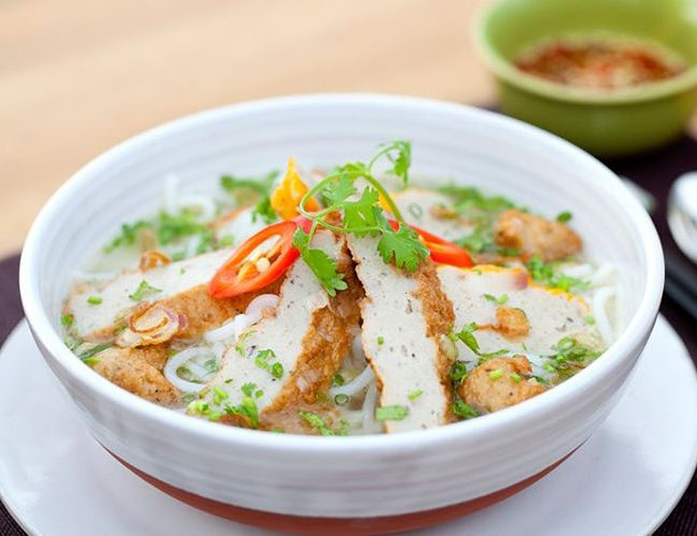
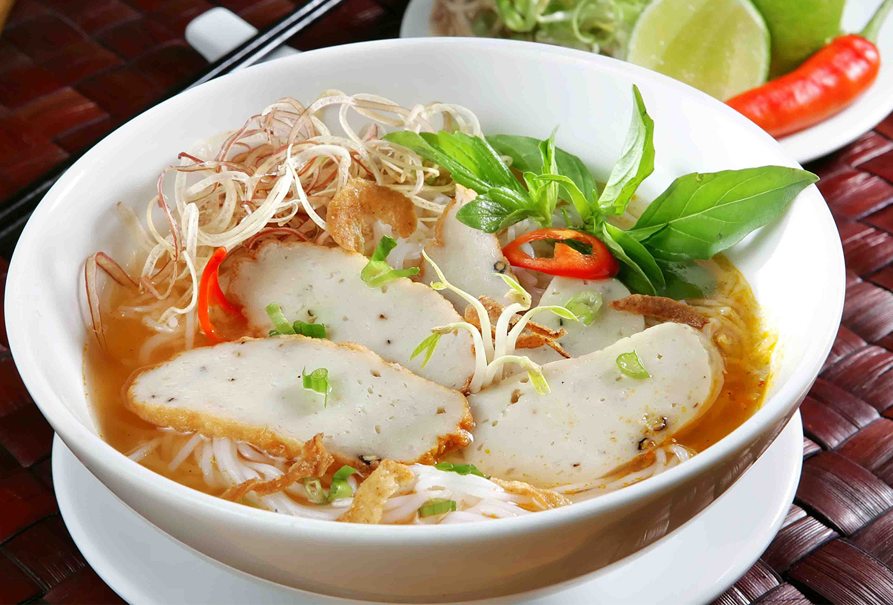
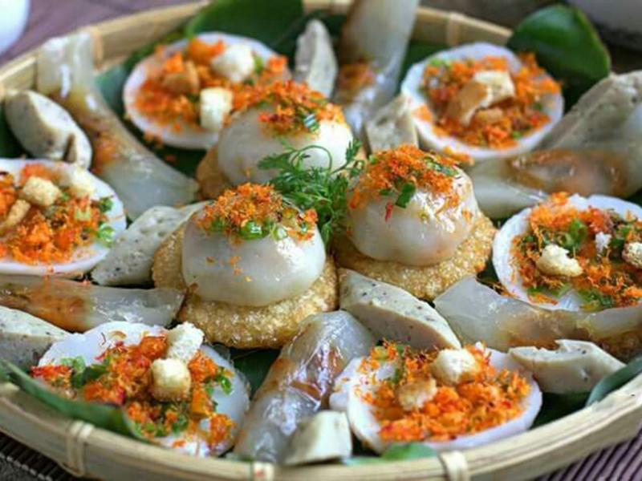
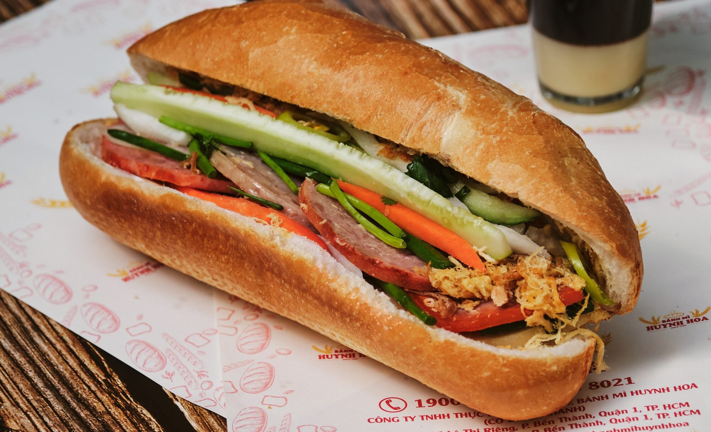

ẨM THỰC BA MIỀN
ẨM THỰC MIỀN BẮC
Ẩm thực miền Bắc Việt Nam mang đậm nét truyền thống, thanh đạm và tinh tế. Do khí hậu có bốn mùa rõ rệt, món ăn miền Bắc thường có hương vị nhẹ nhàng, ít cay, ít ngọt, chú trọng giữ vị tự nhiên của nguyên liệu. Gia vị được sử dụng vừa phải, phổ biến nhất là nước mắm, mắm tôm, hành, thì là, rau thơm.
Nguyên liệu trong ẩm thực miền Bắc rất đa dạng, chủ yếu từ lúa gạo, rau xanh, cá nước ngọt và các loại thịt quen thuộc như lợn, gà, bò. Các món ăn thường không quá cầu kỳ nhưng được chế biến khéo léo, tinh tế.
Một số món ăn tiêu biểu của miền Bắc có thể kể đến như phở, bún chả, bún thang, chả cá Lã Vọng, bánh cuốn, bánh chưng,… Những món ăn này không chỉ thể hiện nét đặc trưng của ẩm thực miền Bắc mà còn góp phần làm nên bản sắc văn hóa ẩm thực Việt Nam.

Ẩm thực miền Bắc – Những món ngon hấp dẫn, thu hút thực khách
Phở Hà Nội

Đây là "linh hồn" của ẩm thực Việt Nam. Phở Bắc thường có nước dùng trong, ngọt thanh từ xương ống bò ninh kỹ, bánh phở mỏng dai.
Bún Chả Hà Nội

Món ăn này từng gây sốt thế giới khi cựu Tổng thống Mỹ Obama thưởng thức. Bún chả gồm thịt nướng (chả miếng và chả viên) được nướng trên than hoa thơm phức, ăn kèm với nước chấm chua ngọt có đu đủ xanh, cà rốt và các loại rau sống.
Chả Cá Lã Vọng

Một món ăn cầu kỳ và sang trọng của người Hà thành. Cá (thường là cá lăng) được thái miếng, tẩm ướp gia vị rồi nướng sơ, sau đó mới cho vào chảo mỡ cùng hành hoa và thì là.
Bún Đậu Mắm Tôm

Dù đã phổ biến khắp cả nước nhưng bún đậu mắm tôm ở miền Bắc vẫn mang một phong vị riêng. Một mẹt đầy đủ thường có bún lá, đậu phụ rán vàng giòn, thịt chân giò luộc, chả cốm và nem chua rán.
Bánh Cuốn Thanh Trì

Bánh cuốn miền Bắc thường rất mỏng, trắng trong, được tráng trên hơi nước. Bánh có thể không nhân (chỉ thoa mỡ hành) hoặc có nhân thịt băm mộc nhĩ.
Cốm Làng Vòng

Đây là thức quà tao nhã của mùa thu Hà Nội. Những hạt nếp non được rang và giã tỉ mỉ để tạo ra những hạt cốm xanh mướt, dẻo thơm mùi lúa mới. Cốm thường được gói trong lá sen để giữ hương vị.
Thịt Trâu Gác Bếp (Tây Bắc)

Đại diện cho vùng núi phía Bắc, đây là món ăn của người Thái đen. Thịt trâu tươi được tẩm ướp mắc khén, hạt dổi rồi treo lên gác bếp để hun khói tự nhiên.
Nem Nắm Giao Thủy (Nam Định)

Đây là món ăn truyền thống thường xuất hiện trong các dịp lễ tết, đình đám tại Nam Định.
Cá Kho Làng Vũ Đại (Hà Nam)

Một món ăn bình dân nhưng cực kỳ công phu, đã trở thành thương hiệu nổi tiếng khắp cả nước.
Bánh Đa Cua (Hải Phòng)

Món ăn mang đậm hơi thở của thành phố Cảng.
ẨM THỰC MIỀN TRUNG
Ẩm thực miền Trung Việt Nam mang đậm dấu ấn của vùng đất nắng gió, thể hiện sự đậm đà, cay nồng và mộc mạc. Do điều kiện tự nhiên khắc nghiệt, món ăn miền Trung thường có hương vị mạnh, đặc biệt là vị cay và mặn, nhằm bảo quản thực phẩm lâu hơn. Gia vị được sử dụng phổ biến gồm ớt, tiêu, mắm ruốc, mắm nêm, sả.
Nguyên liệu trong ẩm thực miền Trung không quá phong phú nhưng được chế biến khéo léo, chú trọng hình thức và khẩu phần nhỏ gọn. Các món ăn tuy giản dị nhưng rất đậm vị, thể hiện sự cần cù và sáng tạo của người dân nơi đây.
Một số món ăn tiêu biểu của miền Trung là bún bò Huế, mì Quảng, cơm hến, bánh bèo, bánh nậm, bánh bột lọc,… Những món ăn này góp phần làm nổi bật nét đặc trưng mạnh mẽ của ẩm thực miền Trung Việt Nam.

Ẩm thực miền Trung – Những món ăn đậm đà hương vị
Bún Bò Huế (Thừa Thiên Huế)

Không chỉ là một món ăn, bún bò Huế còn là biểu tượng văn hóa của cố đô.
Mì Quảng (Quảng Nam - Đà Nẵng)

Đây là món ăn mang đậm tính chân chất của người dân xứ Quảng.
Cơm Hến (Huế)

Khác với bánh xèo miền Nam to và mềm, bánh xèo Bình Định nhỏ nhắn và giòn rụm.
Cao Lầu (Hội An)

Món ăn "huyền thoại" của phố cổ Hội An với lịch sử hàng trăm năm.
Nem Lụi (Huế)

Món ăn nướng thơm nức mũi dọc các con phố miền Trung.
Bánh Canh Chả Cá (Nha Trang - Bình Định)

Đại diện cho ẩm thực vùng biển miền Trung.
Bún Chả Cá (Đà Nẵng)

Tương tự như bánh canh nhưng bún chả cá Đà Nẵng có nước dùng mang vị chua ngọt đặc trưng từ cà chua, dứa (thơm) và bí đỏ.
Bánh Bèo - Lọc - Nậm (Miền Trung nói chung)

Bộ ba loại bánh làm từ bột gạo và bột lọc là thức quà chiều không thể thiếu.
Chả Ram Tôm Đất (Bình Định)

Món ăn nhỏ xinh nhưng cực kỳ "có võ" thường xuất hiện trong các dịp lễ tết.
ẨM THỰC MIỀN NAM
Ẩm thực miền Nam Việt Nam mang nét phóng khoáng, ngọt ngào và dân dã, gắn liền với vùng đất sông nước trù phú. Nhờ khí hậu ấm áp quanh năm, nguồn nguyên liệu phong phú, món ăn miền Nam thường có vị ngọt rõ rệt và béo, đặc biệt là vị ngọt từ đường và nước cốt dừa. Gia vị được sử dụng đa dạng như nước mắm, me, sả, ớt, dừa.
Nguyên liệu chủ yếu là lúa gạo, cá tôm, hải sản, rau quả miệt vườn, rất tươi ngon và dễ tìm. Cách chế biến đơn giản, không cầu kỳ nhưng đậm đà hương vị.
Một số món ăn tiêu biểu của miền Nam có thể kể đến như canh chua cá lóc, cá kho tộ, lẩu mắm, bánh xèo, hủ tiếu, cơm tấm,… Những món ăn này thể hiện rõ nét tính cách cởi mở, hào sảng của con người miền Nam và làm phong phú thêm bức tranh ẩm thực Việt Nam.

Ẩm thực miền Nam – Những món ngon của miền sông nước
Cơm Tấm (Sài Gòn)

Đây là món ăn "quốc hồn quốc túy" của người dân Sài Gòn. Cơm được nấu từ những hạt gạo vụn (gạo tấm), tạo nên kết cấu tơi xốp đặc biệt.
Hủ Tiếu Nam Vang

Có nguồn gốc từ Campuchia nhưng đã được người dân miền Nam biến tấu để trở thành món ăn đặc trưng của vùng đất này.
Bánh Xèo Miền Nam

Khác với bánh xèo miền Trung nhỏ nhắn, bánh xèo miền Nam thường có kích thước rất lớn, vành bánh mỏng và giòn tan.
Lẩu Cá Kèo Lá Giang

Món lẩu này rất phổ biến trong các buổi tụ họp của người dân Nam Bộ.
Gỏi Cuốn (Sài Gòn)

Được bình chọn là một trong những món ăn ngon nhất thế giới.
Bánh Canh Trảng Bàng (Tây Ninh)

Đây là món ăn niềm tự hào của người dân Tây Ninh.
Phá Lấu (Sài Gòn)

Một món ăn đường phố kinh điển gắn liền với bao thế hệ học sinh, sinh viên miền Nam.
Bánh Mì Sài Gòn

Dù bắt nguồn từ bánh baguette của Pháp, nhưng người Sài Gòn đã biến tấu nó trở thành món ăn đường phố ngon nhất thế giới.
- Đặc điểm: Ổ bánh mì phải có lớp vỏ vàng giòn rụm, ruột mềm và xốp.
- Nhân Bánh: Một ổ "đầy đủ" thường có bơ, pate gan béo ngậy, chả lụa, thịt nguội (giò thủ), xá xíu, dưa leo, ngò rí và đặc biệt không thể thiếu đồ chua (cà rốt, củ cải ngâm giấm).
- Biến tấu: Ngoài ra còn có bánh mì bì, bánh mì phá lấu, bánh mì xíu mại hay bánh mì chảo.
Chè Miền Nam

Người miền Nam rất hảo ngọt, vì thế các món chè ở đây cực kỳ đa dạng.
Bún Kèn (Phú Quốc/Kiên Giang)

Đây là món ăn khá lạ lẫm với người miền Bắc nhưng lại là đặc sản trứ danh vùng đảo Ngọc.